Trekking s alpakami, jízda na poníkovi a králíci, kteří vedou děti za ruku. Malé skupiny, žádné davy — jen klid, příroda a zvířata s vlastním jménem.
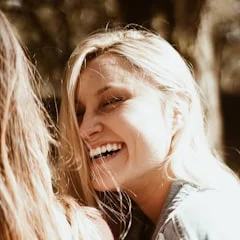
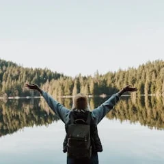
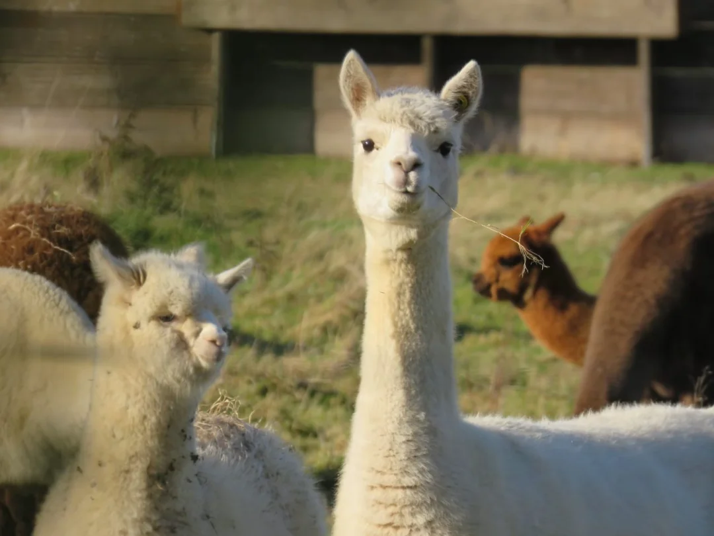
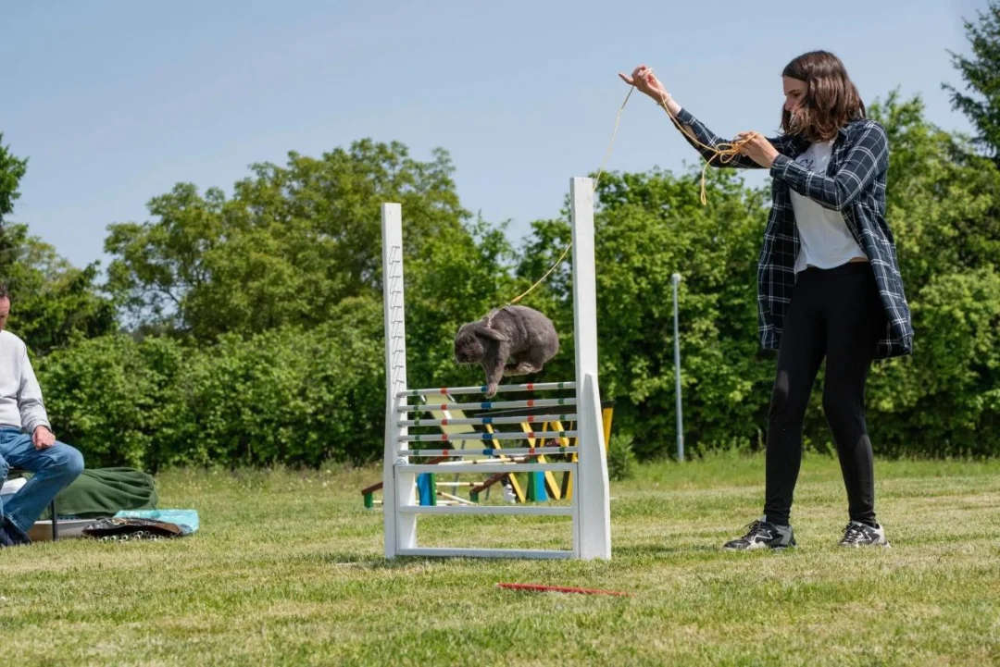
Jsme malá rodinná farma kousek od Soběslavi, v Myslkovicích. Chováme dvě alpaky, dva poníky a dvanáct králíků různých plemen — a každé zvíře u nás má jméno i svůj příběh. Nechceme být přeplněnou atrakcí. Chceme být místem, kam se dá utéct od spěchu a mobilů.
U nás děti zvířata vodí, čistí a poznávají zblízka. Nejsou jen diváci za plotem. Vyberte si, co vás láká — každá naše aktivita má svou stránku s podrobnostmi.
Více o farměŠest světů jedné malé farmy. Klikněte na to, co vás zajímá — každá stránka má vlastní fotky a podrobnosti.
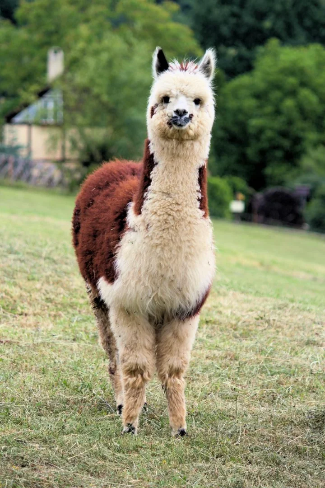
Kdo jsme, jaká zvířata u nás žijí a proč děláme věci v klidu a s respektem.
Poznat farmu →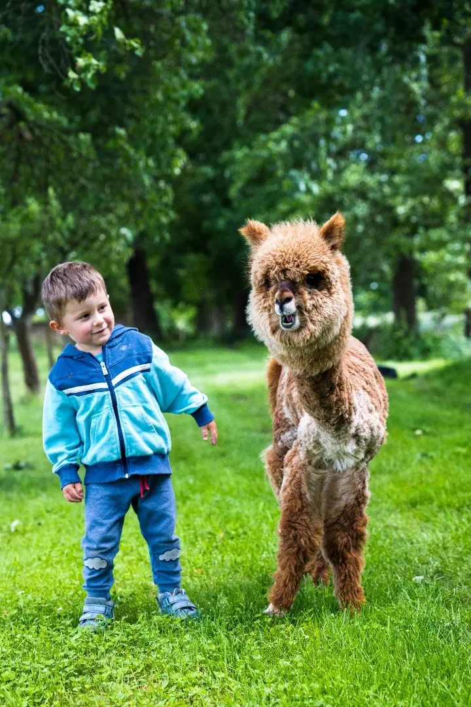
Klidná procházka krajinou s alpakou po boku. Zvíře vede vaše dítě.
Více o trekkingu →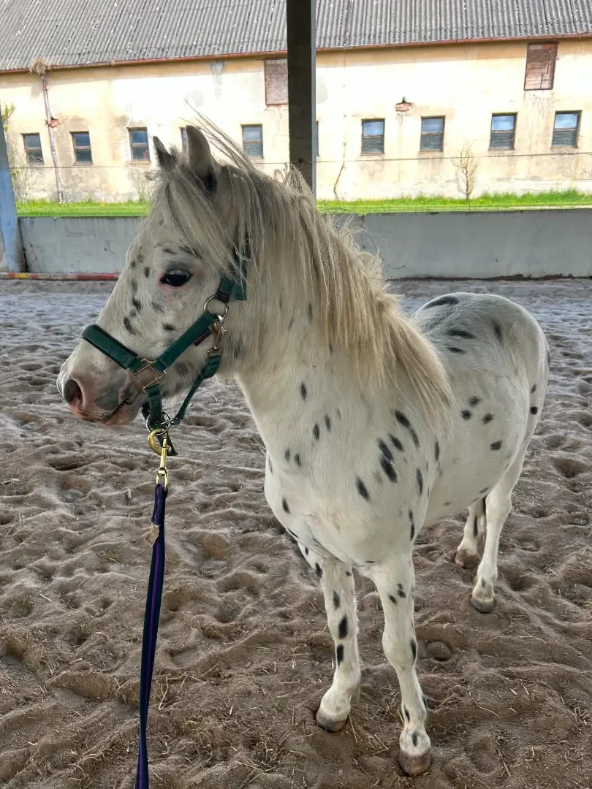
Bezpečná první jízda pro nejmenší — pro děti do 25 kg, vždy s doprovodem.
Více o jízdě →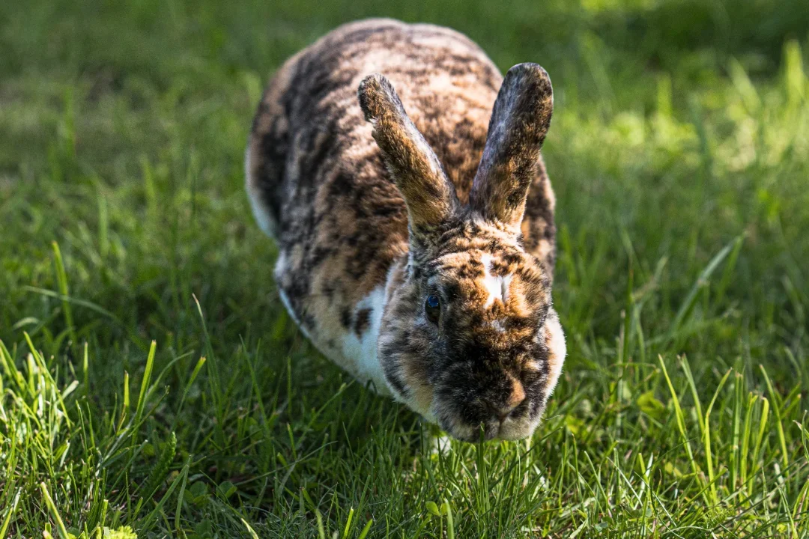
Přijedeme za vámi — do sociálních zařízení. Králíci přinášejí radost.
Více o návštěvách →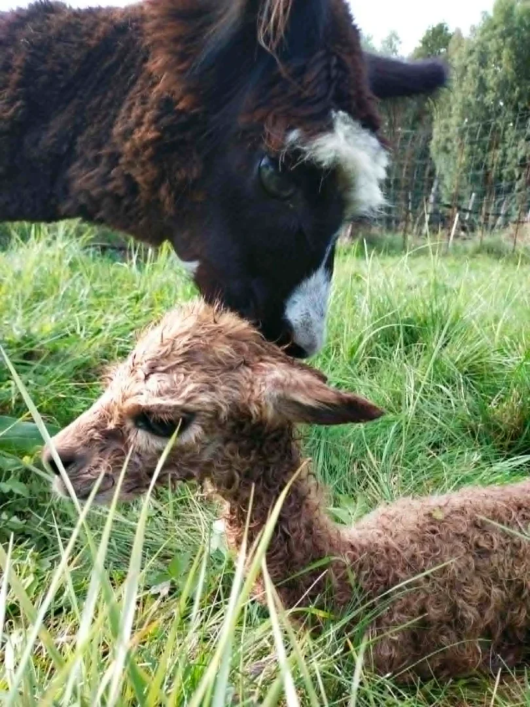
Jemná a hřejivá vlna z vlastního chovu, v béžové a černé. Na rezervaci.
Více o vlně →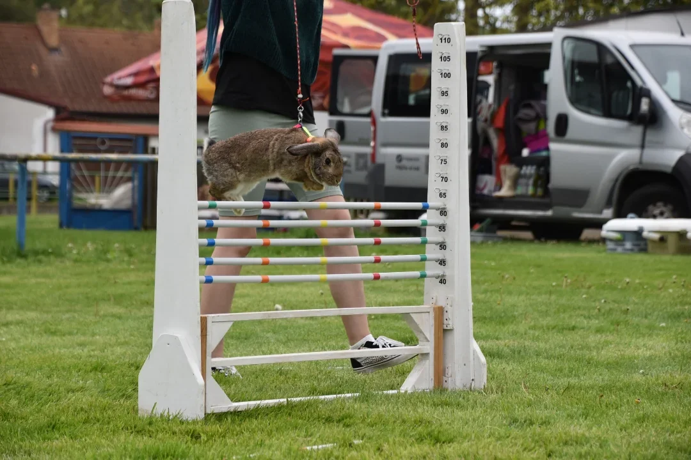
Kousek atmosféry z farmy — alpaky, poníci, králíci i krajina.
Prohlédnout galerii →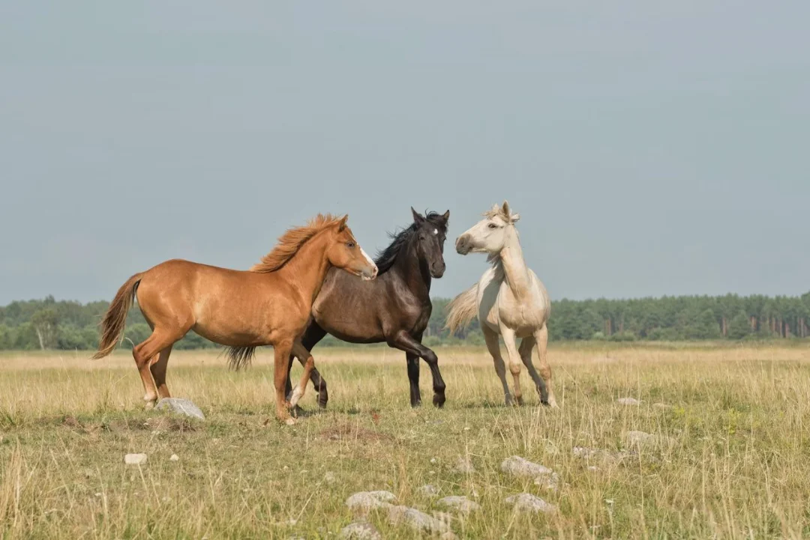
Děti byly nadšené — poprvé vedly alpaku samy. Žádný spěch, žádné davy. Přesně to jsme hledali.
Krásné klidné místo. Vnučka si užila poníka a já ten klid v přírodě. Určitě přijedeme znovu.
Návštěva s králíčky udělala našim klientům obrovskou radost. Moc děkujeme za lidský přístup.
Nejrychleji nás zastihnete telefonicky. Napište nebo zavolejte, kolik vás bude a co byste rádi zažili — ozveme se.